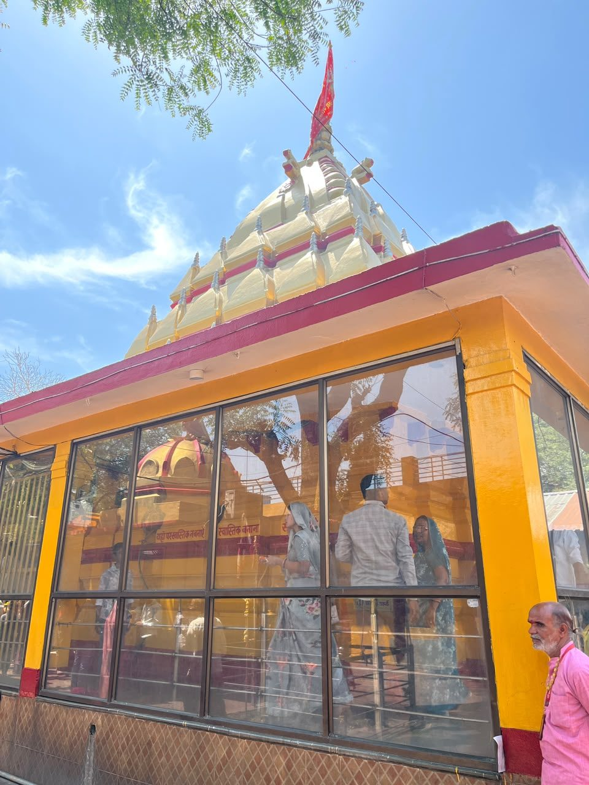
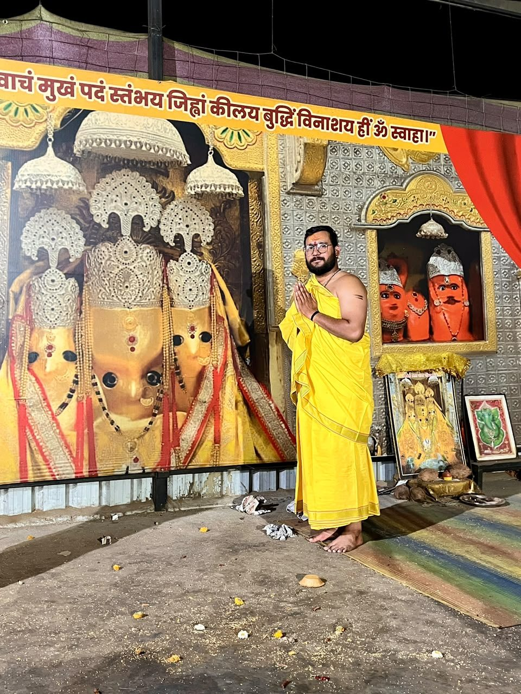
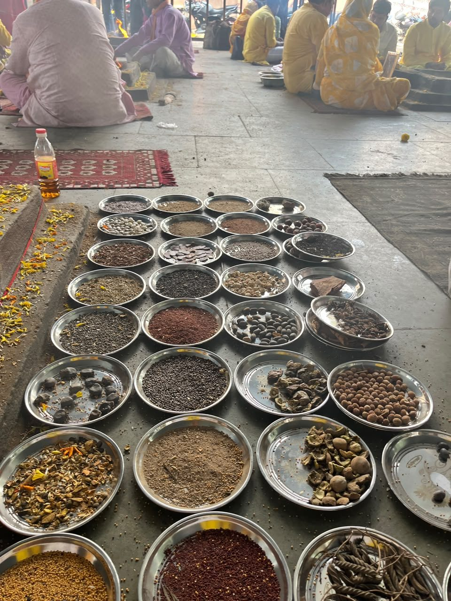
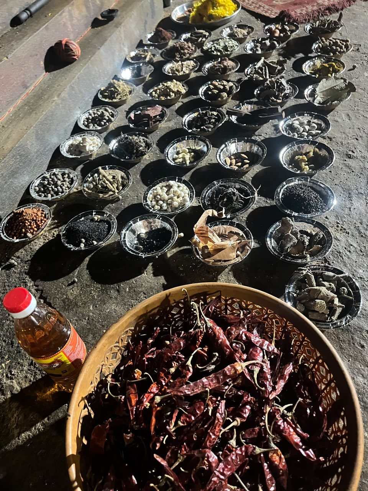
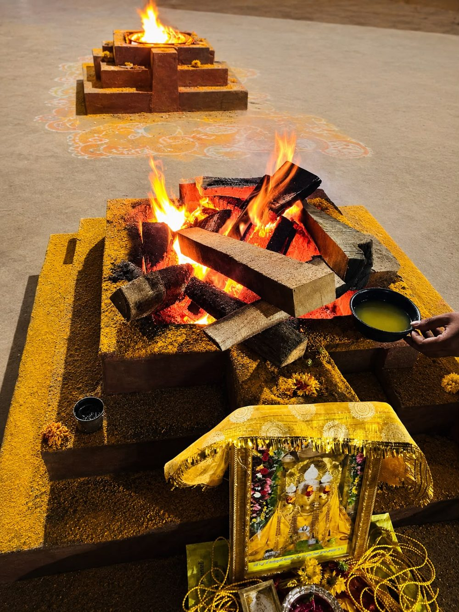
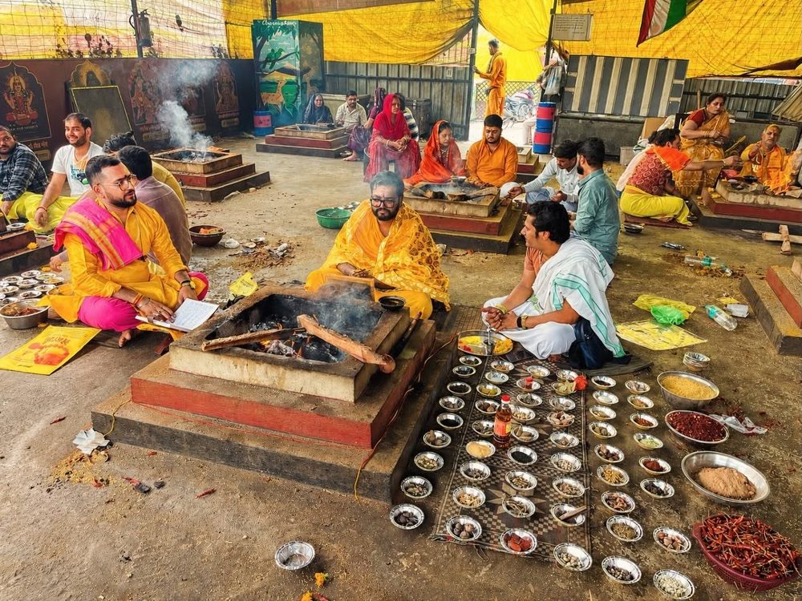
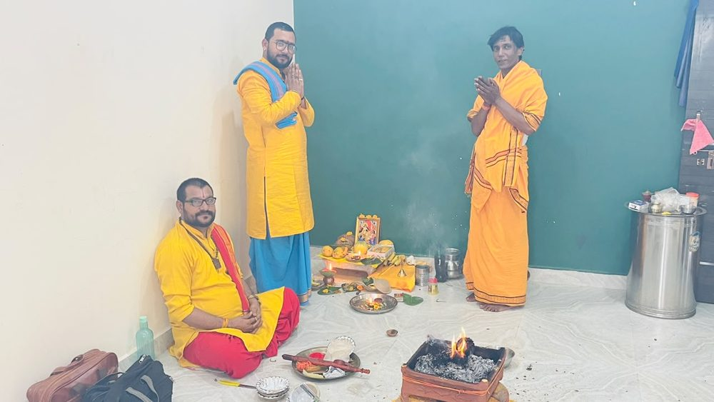
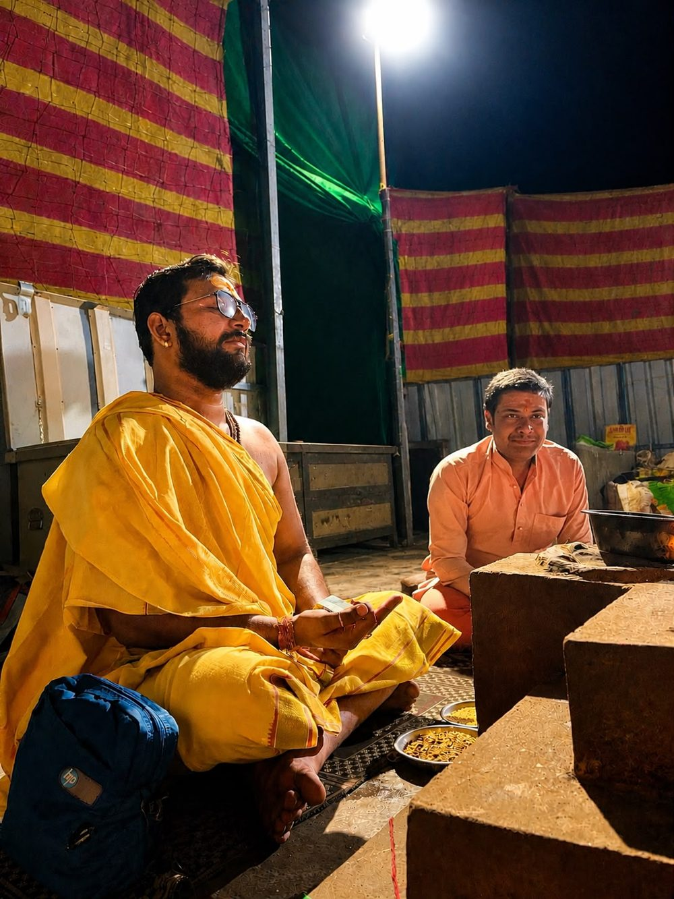
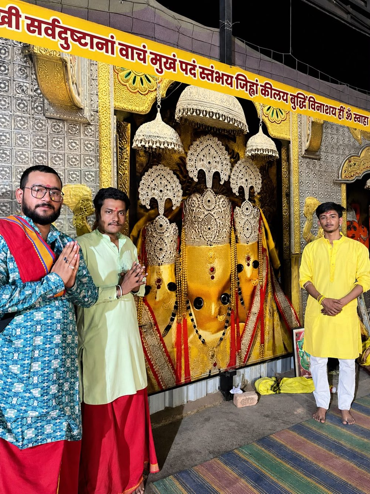

आचार्य परिचय
गुरु-परंपरा से प्राप्त ज्ञान, श्रद्धा के साथ सेवा
वैदिक एवं तांत्रिक कर्मकाण्ड की परंपरा में पिछले 5 वर्षों की साधना और सेवा।


आचार्य पं. शुभम् पांडेय
आचार्य पं. शुभम् पांडेय पिछले 5 वर्षों से वैदिक एवं तांत्रिक परंपरा के अनुसार विभिन्न प्रकार के हवन, जप एवं अनुष्ठान शास्त्रोक्त विधि-विधान से संपन्न करा रहे हैं।
इनका प्रशिक्षण एवं आध्यात्मिक मार्गदर्शन माँ बगलामुखी शक्तिपीठ, नलखेड़ा आगर मालवा (म.प्र.) में अनुभवी एवं विद्वान ब्राह्मणों के सान्निध्य में प्राप्त हुआ है। गुरु-परंपरा के अनुसार इन्होंने वैदिक एवं तांत्रिक कर्मकाण्ड, मंत्र साधना तथा यज्ञ-विधान का अध्ययन एवं अभ्यास किया है।
प्रत्येक अनुष्ठान यजमान की आवश्यकता एवं संकल्प के अनुसार पूर्ण श्रद्धा, गोपनीयता और विधि-विधान के साथ संपन्न कराया जाता है। उद्देश्य केवल हवन कराना नहीं, बल्कि श्रद्धालुओं को उचित आध्यात्मिक मार्गदर्शन देना है।
- नाम
- आचार्य पं. शुभम् पांडेय
- कार्य
- वैदिक एवं तांत्रिक कर्मकाण्ड आचार्य
- अनुभव
- 5 वर्ष
- प्रशिक्षण
- माँ बगलामुखी शक्तिपीठ, नलखेड़ा आगर मालवा (म.प्र.)
- सेवा
- नलखेड़ा में प्रत्यक्ष अनुष्ठान; भारत एवं विदेश के श्रद्धालुओं के लिए वीडियो कॉल द्वारा सहभागिता।

शक्तिपीठ और गुरु-परंपरा
भारतीय परंपरा में विद्या गुरु के सान्निध्य में प्राप्त होती है। आचार्य जी ने नलखेड़ा स्थित माँ बगलामुखी शक्तिपीठ में अनुभवी एवं विद्वान ब्राह्मणों के मार्गदर्शन में मंत्र साधना, यज्ञ-विधान तथा वैदिक एवं तांत्रिक कर्मकाण्ड का अध्ययन एवं अभ्यास किया है।
शास्त्रोक्त विधि का महत्व इसलिए है कि हवन केवल एक क्रिया नहीं, बल्कि संकल्प, मंत्र, सामग्री और पूर्णाहुति का क्रमबद्ध अनुष्ठान है।

.jpeg)

माँ बगलामुखी: पीताम्बरा स्वरूप
परंपरा में माँ बगलामुखी को दस महाविद्याओं में से एक माना जाता है। इन्हें पीताम्बरा भी कहा जाता है, क्योंकि पूजा में पीले रंग का विशेष महत्व माना गया है।
परंपरागत रूप से हल्दी, पीले वस्त्र और पीले पुष्प माँ की आराधना में प्रयुक्त होते हैं। भक्त वाणी, साहस और बाधाओं की शांति के लिए माँ का स्मरण और अनुष्ठान करते हैं।
हवन सामग्री एवं विधि
हवन में संकल्प, मंत्र और सामग्री का क्रम महत्वपूर्ण माना जाता है। अनुष्ठान से पहले सामग्री विधिपूर्वक सजाई जाती है।



हमारे सिद्धांत
- १. शुद्धता: विधि, सामग्री और मंत्रोच्चार में शुद्धता का ध्यान।
- २. संकल्प: प्रत्येक अनुष्ठान यजमान की आवश्यकता के अनुसार।
- ३. पारदर्शिता: हवन का प्रकार और दक्षिणा पहले से स्पष्ट।
- ४. गोपनीयता: यजमान की जानकारी पूर्णतः गोपनीय।
- ५. श्रद्धा: हर कार्य पूर्ण श्रद्धा एवं भक्तिभाव से।
अनुष्ठान की झलकियाँ












वीडियो कॉल द्वारा सहभागिता
भारत या विदेश में रहने वाले श्रद्धालु वीडियो कॉल द्वारा भी अनुष्ठान से जुड़ सकते हैं। व्यवस्था की जानकारी WhatsApp पर परामर्श के समय दी जाती है।
आवश्यक सूचना: वर्णित लाभ धार्मिक एवं तांत्रिक परंपराओं पर आधारित हैं। परिणाम व्यक्ति की श्रद्धा, संकल्प, विधि-विधान तथा गुरु के मार्गदर्शन पर निर्भर माने जाते हैं। यह सेवा चिकित्सा, कानूनी या वित्तीय सलाह का विकल्प नहीं है।
॥ श्रद्धा • शास्त्र • साधना • सेवा ॥
अपने संकल्प के लिए उचित मार्गदर्शन प्राप्त करें
माँ बगलामुखी शक्तिपीठ, नलखेड़ा आगर मालवा (म.प्र.) में प्रत्यक्ष अनुष्ठान के साथ भारत या विदेश में रहने वाले श्रद्धालु वीडियो कॉल द्वारा भी जुड़ सकते हैं। व्यवस्था एवं परामर्श के लिए WhatsApp पर संपर्क करें।